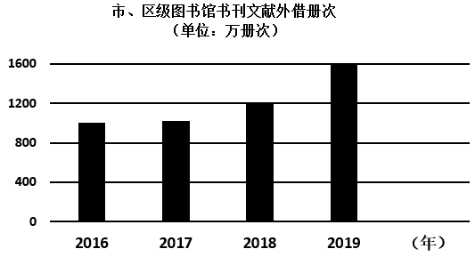

2024年北京中考历史 第24题 解析
24 书香北京
书香北京
材料一 辽、金、元时期北京地区的图书业
时期 | 城市地位 | 发展 |
辽 | 辽南京（燕京），北方政治中心之一 | 辽、宋之间的榷场贸易方便了中原书籍的传入，辽统治者大量购入汉文书籍，燕京的书肆也开始刊刻汉文书籍，少儿启蒙常常以汉人诗词为教材。 |
金 | 金中都，区域政权的政治中心 | 金章宗多次下诏求购汉文书籍。中都是金朝图书交易的主要地区，刻售了经史、医学和民间说唱等书籍，重在满足民众的需求。 |
元 | 元大都， ① | 大都的书肆大量刻印儒家经典和文史书籍等，城内出现了专营某类图书的专业书肆和有固定场所的书籍市场，方便文人学士购书。 |
——摘编自马建农《北京古旧书业的行业特征及其影响》
（1）依据材料一并结合所学，将①处填写完整。写出辽、金、元时期，北京地区图书业发展的原因并分析其影响。
材料二 19世纪60年代后，京师同文馆翻译并出版了不少西方科学技术书籍。甲午中日战争后，京城书商翻译出版了一些有关政治制度、法律等方面的新书。20世纪初，北京出版界形成了一个出书热潮，鲁迅等人的作品深受青年读者欢迎。1919年，李大钊等人宣传新思想的作品也出现在东安市场的书店中。
——摘编自于丽萍《20世纪上半期北京书业发展研究》等
（2）依据材料二，结合史实说明近代北京图书出版与时代发展紧密相联。
材料三 据统计，2020年北京市共有四级公共图书馆5935个，馆舍总面积达67万平方米，比2019年增加了20%；数字资源也有了很大发展，首都图书馆的数字资源库多达108个。2023年开放的北京城市图书馆融入了智能服务，AI数智馆员提供阅读指导、个性推荐等服务；未来还能构建出虚拟与现实交融的阅读世界，读者可以探索知识的无垠边界。
——摘编自展圣洁等《探访北京城市图书馆》等

（3）依据材料三，写出近年来北京地区图书馆的发展情况。谈谈“书香北京”对你学习、生活的作用。
【答案】（1）①全国政治中心。
原因：经济交流与发展，榷场贸易的推动；统治者重视；书肆以及书籍市场的推动；政治中心的地位，推动了图书业的发展；受宋朝科技发达，文化昌盛，读书风气浓厚的影响。
影响：促进了文化的传播和交流，推动了民族融合；提升了民众的文化素养，满足民众需求，丰富了人们的精神生活。为后世的文化发展奠定了基础，保留了丰富的文化遗产。
（2）说明：①19世纪60年代，洋务运动主张学习西方技术以自强，因此，出版了不少西方科学技术书籍。②甲午战争后民族危机加深，人们开始探索政治制度变革以救亡图存，因此，出版有关政治制度、法律等方面的新书。③新文化运动和马克思主义在中国的传播，因此，鲁迅等人的作品深受青年读者欢迎，以及李大钊等人宣传新思想的作品出现。
（3）情况：公共图书馆数量众多，馆舍总面积增加；数字资源发展迅速，数字资源库增多；融入智能服务，提供个性化阅读指导等服务，未来还能构建虚拟与现实交融的阅读世界；市、区级图书馆书刊文献外借册次数逐年增加。
作用：有利于提供了广阔的知识获取渠道，拓展知识面，助力学业进步；提供了个性化推荐，提高学习效率；提供了宁静的阅读和学习空间，身心放松，充实精神世界；人们的业余生活，提升生活品质；营造了浓厚的文化氛围，促进了城市的文化建设和精神文明发展。
【解析】
【小问1详解】
①：根据材料一“元大都”“金中都，区域政权的政治中心”“辽南京（燕京），北方政治中心之一”和所学知识可知，元大都，即元朝都城，是全国的政治中心，在历史上有着重要的地位和影响。所以，①为全国政治中心。
原因：根据材料一“辽、宋之间的榷场贸易方便了中原书籍的传入”可得出，交流与发展，榷场贸易的推动；根据材料一“辽统治者大量购入汉文书籍”“金章宗多次下诏求购汉文书籍”可得出，统治者重视；根据材料一“燕京的书肆也开始刊刻汉文书籍”“大都的书肆大量刻印儒家经典和文史书籍等”“城内出现了专营某类图书的专业书肆和有固定场所的书籍市场”可得出，书肆以及书籍市场的推动；根据材料一“中都是金朝图书交易的主要地区”可得出，政治中心的地位，推动了图书业的发展；并结合宋朝的时代特征可知，受宋朝科技发达，文化昌盛，读书风气浓厚的影响。
【小问2详解】
说明：根据材料二“19世纪60年代后，京师同文馆翻译并出版了不少西方科学技术书籍”可得出，19世纪60年代，洋务运动主张学习西方技术以自强，因此，出版了不少西方科学技术书籍。
根据材料二“甲午中日战争后，京城书商翻译出版了一些有关政治制度、法律等方面的新书”可得出，甲午战争后民族危机加深，人们开始探索政治制度变革以救亡图存，因此，出版有关政治制度、法律等方面的新书。根据材料二“20世纪初，北京出版界形成了一个出书热潮，鲁迅等人的作品深受青年读者欢迎。1919年，李大钊等人宣传新思想的作品也出现在东安市场的书店中”和所学知识可知，可以从新文化运动以及马克思主义传播等角度进行分析，新文化运动和马克思主义在中国的传播，因此，鲁迅等人的作品深受青年读者欢迎，以及李大钊等人宣传新思想的作品出现。
【小问3详解】
情况：根据材料三“2020年北京市共有四级公共图书馆5935个，馆舍总面积达67万平方米，比2019年增加了20%”可得出，公共图书馆数量众多，馆舍总面积增加；根据材料三“数字资源也有了很大发展，首都图书馆的数字资源库多达108个”可得出，数字资源发展迅速，数字资源库增多；根据材料三“2023年开放的北京城市图书馆融入了智能服务，AI数智馆员提供阅读指导、个性推荐等服务；未来还能构建出虚拟与现实交融的阅读世界”可得出，融入智能服务，提供个性化阅读指导等服务，未来还能构建虚拟与现实交融的阅读世界；根据材料三“市、区级图书馆书刊文献外借册次(单位:万册次)”可得出，市、区级图书馆书刊文献外借册次数逐年增加。
作用：根据所学知识可知，可以从扩宽渠道、扩展知识、提高学习效率、充实精神世界、提升生活品质、营造文化氛围、促进城市文化和精神文明发展等角度进行分析，所以，“书香北京”对你学习、生活的作用为学习上：有利于提供了广阔的知识获取渠道，拓展知识面，助力学业进步；提供了个性化推荐，提高学习效率。生活上：提供了宁静的阅读和学习空间，身心放松，充实精神世界；丰富人们的业余生活，提升生活品质；营造了浓厚的文化氛围，促进了城市的文化建设和精神文明发展。